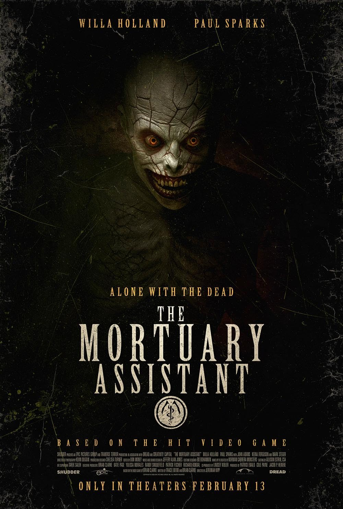

Dr. Strangelove (1964) Full Movie | Stanley Kubrick's Nuclear Satire | Peter Sellers, George C. Scott | Black Comedy Classic

Synopsis
Prepare for a hilariously terrifying journey into the absurdity of nuclear warfare with **Stanley Kubrick's** seminal black comedy, "Dr. Strangelove or: How I Learned to Stop Worrying and Love the Bomb" (1964). When a rogue U.S. Air Force General **Jack D. Ripper (Sterling Hayden)**, convinced of a Communist plot to pollute American "precious bodily fluids," orders an unauthorized nuclear attack on the Soviet Union, the fate of the world rests in the hands of a bizarre cast of characters. The U.S. President **Merkin Muffley (Peter Sellers)**, his hawkish advisor **General Buck Turgidson (George C. Scott)**, a bewildered British Group Captain **Lionel Mandrake (Peter Sellers)**, and the eccentric ex-Nazi scientist **Dr. Strangelove (Peter Sellers)** desperately try to avert global annihilation in the infamous War Room. Meanwhile, a B-52 bomber, led by the cowboy-hat-wearing **Major T.J. "King" Kong (Slim Pickens)**, races toward its target, ultimately triggering a top-secret Soviet Doomsday Machine. This brilliant, darkly humorous film, co-written by **Kubrick**, **Terry Southern**, and **Peter George**, masterfully critiques the Cold War mentality and the terrifying logic of mutually assured destruction. Experience one of the greatest and most influential films ever made in stunning quality. Watch the full movie now.
⭐ Film Highlights & Notes
- Full feature presentation restored for high-quality playback.
- Available to stream on MovieHub Vault.
Enjoying MovieHub? Grab Dennis a coffee to support server costs and keep the vault free for everyone!
☕ Buy Me a CoffeeYou Might Also Like


